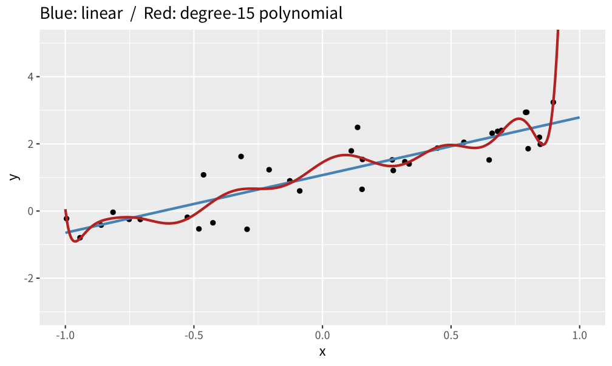
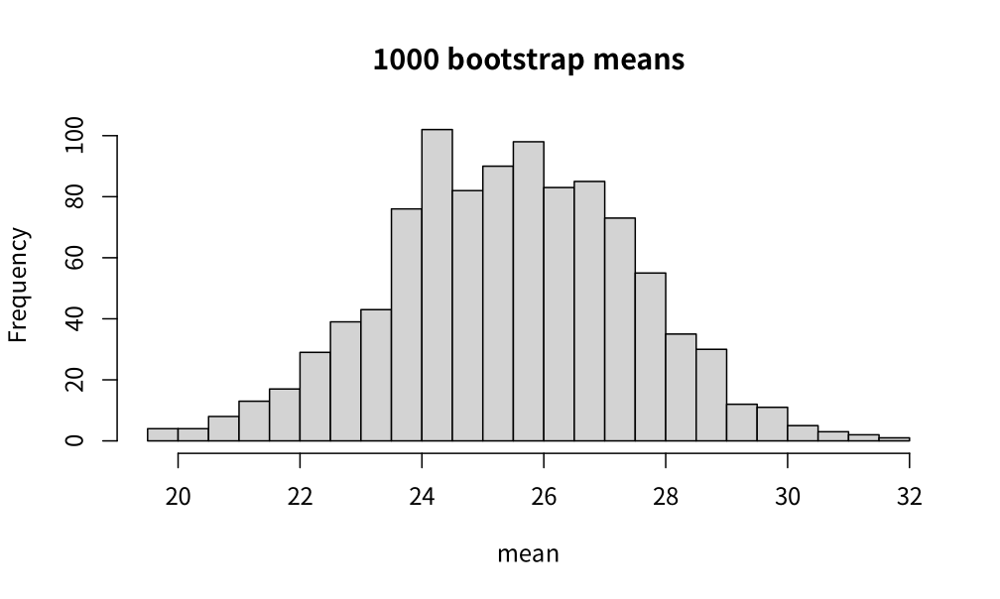

首頁 › 課程筆記 › 第 8 章 前兩章配適模型後，都用「同一份資料」計算 \(R^2\)、正確率 。問題是：模型本來就是依這份資料調整出來的，用它來評分，等於拿考古題原題考自己，分數一定偏高。我們真正關心的是模型對沒看過的新資料 表現如何。這一章學三種做法：切成訓練集 與測試集 交叉驗證 、自助抽樣 bootstrap ——它們的共同精神都是重抽樣 （resampling）：用資料本身模擬出「新資料」。
複製 R library ( tidyverse )
library ( foreign )
library ( boot ) # cv.glm()、boot()
kidiq <- read.dta ( "kidiq.dta" )
8.1 為什麼不能用訓練資料評估：過度配適用一個模擬例子說明。真實關係是直線 \(y=1+2x+\varepsilon\)，只有 35 筆訓練資料；另外產生 2000 筆同樣來源的新資料當測試集。比較兩個模型：簡單直線，和 15 次多項式。
複製 ▶ 執行 R set.seed ( 8054 )
make_data <- function ( n ) {
x <- runif ( n , -1 , 1 )
data.frame ( x = x , y = 1 + 2 * x + rnorm ( n , sd = 0.5 ))
}
d_train <- make_data ( 35 )
d_test <- make_data ( 2000 )
fit_simple <- lm ( y ~ x , data = d_train )
fit_complex <- lm ( y ~ poly ( x , 15 , raw = TRUE ), data = d_train ) # x, x^2, ..., x^15
mse <- function ( fit , dat ) mean (( dat $ y - predict ( fit , newdata = dat )) ^ 2 )
data.frame ( model = c ( "linear" , "degree 15" ),
train_MSE = c ( mse ( fit_simple , d_train ), mse ( fit_complex , d_train )),
test_MSE = c ( mse ( fit_simple , d_test ), mse ( fit_complex , d_test )))
## model train_MSE test_MSE
## 1 linear 0.2719 0.2753
## 2 degree 15 0.2102 19.8032
MSE （mean squared error，均方誤差）= 預測誤差平方的平均，越小越好。poly(x, 15, raw = TRUE) 一次產生 x 的 1～15 次方當預測變數 。15 次多項式的訓練 MSE 比直線小（它能彎來彎去穿過更多點），但測試 MSE 大得多。
複製 R grid <- data.frame ( x = seq ( -1 , 1 , length.out = 400 ))
grid $ linear <- predict ( fit_simple , grid )
grid $ deg15 <- predict ( fit_complex , grid )
ggplot ( d_train , aes ( x , y )) +
geom_point () +
geom_line ( data = grid , aes ( y = linear ), color = "steelblue" , linewidth = 1 ) +
geom_line ( data = grid , aes ( y = deg15 ), color = "firebrick" , linewidth = 1 ) +
coord_cartesian ( ylim = c ( -3 , 5 )) +
labs ( title = "Blue: linear / Red: degree-15 polynomial" )

紅線為了穿過每個訓練點而劇烈擺動，尤其在兩端——它把雜訊 也學進去了。這就是過度配適
Concept Check：8.1 為什麼不能用訓練資料評估：過度配適 題目照期末考的題型自編（選擇、填空、簡答、寫程式），不是老師出的題目。選擇與填空用英文題幹，附中文題意。
Which pattern is a typical sign of overfitting?
(A) Both the training error and the test error are very high (B) The training error is high but the test error is quite low (C) The training error and the test error are both near zero (D) The training error is very low but the test error is high 顯示解答 答案 (D) The training error is very low but the test error is high
解析
過度配適的模型記住了訓練資料（包括雜訊），訓練誤差很小，但無法推廣到新資料，測試誤差大。兩者都高是配適不足（underfitting）。
Explain why evaluating a model on its own training data overestimates its performance. Use an overfitting example.
顯示解答 中文題意
說明為什麼用訓練資料本身評估模型會高估表現，並用過度配適的例子說明。
答案 模型的參數是為了讓「訓練資料」的誤差最小而估計出來的，它不只學到真正的規律，也會配適訓練資料中特有的隨機雜訊。用同一批資料評估時，這些雜訊剛好也被「預測對了」，所以誤差偏低。新資料的雜訊不同，這部分就預測不準。例如資料其實是直線關係，用 15 次多項式配適 35 筆資料，曲線會穿過幾乎每一個點，訓練 MSE 很小；但它在點與點之間劇烈擺動，對 2000 筆新資料的測試 MSE 遠大於簡單直線。
解析
老師講義的課後練習。關鍵詞：雜訊、推廣（generalization）、測試集。
Actual values are c(3, 5, 8) and predictions are c(2, 5, 10). What is the MSE?
(A) 1.00 (B) 5.00 (C) 3.00 (D) 1.67 顯示解答 中文題意
實際值 3、5、8，預測值 2、5、10，MSE 是多少？
解析
誤差 1、0、−2，平方 1、0、4，平均 5/3 ≈ 1.67。在 R 中是 mean((c(3,5,8) - c(2,5,10))^2)。(B) 是平方和沒有除以個數。
As a polynomial model becomes more complex (higher degree), what typically happens to the training error and the test error?
(A) Both keep decreasing as the degree goes up (B) Training error falls; test error falls and then rises (C) Training error rises; test error keeps falling down steadily (D) Both stay the same no matter what degree is used 顯示解答 中文題意
多項式次數越高，訓練誤差與測試誤差通常怎麼變？
答案 (B) Training error falls; test error falls and then rises
解析
模型越複雜，越能貼合訓練資料，訓練誤差一路下降；測試誤差先降（抓到真實的關係），之後上升（開始學到雜訊），這個 U 形就是過度配適的特徵。
8.2 訓練集與測試集最簡單的做法：隨機抽一部分資料當訓練集 （training set）配適模型，其餘當測試集 （test set）評估。
複製 ▶ 執行 R set.seed ( 2026 )
train <- sample ( 434 , 200 ) # 從 1～434 不重複抽 200 個列編號
head ( train )
## [1] 221 121 294 45 111 347複製 R fit <- lm ( kid_score ~ mom_iq , data = kidiq , subset = train )
mean (( kidiq $ kid_score - predict ( fit , kidiq ))[ - train ] ^ 2 ) # 測試 MSE
## [1] 338.3逐行說明：
sample(434, 200)：sample(n, k) 是從 1 到 n 不重複抽 k 個，得到訓練集的列編號 。subset = train：lm() 只用這 200 列配適。predict(fit, kidiq)：對全部 434 筆預測。kidiq$kid_score - predict(...)：434 個誤差；[-train] 用負索引排除 訓練集，只留下 234 筆測試集的誤差；平方再平均就是測試 MSE。
同樣的事用資料框 寫比較清楚：
複製 R train_df <- kidiq [ train , ]
test_df <- kidiq [ - train , ]
fit <- lm ( kid_score ~ mom_iq , data = train_df )
mean (( test_df $ kid_score - predict ( fit , newdata = test_df )) ^ 2 )
## [1] 338.3比較兩個模型：
複製 R fit2 <- lm ( kid_score ~ mom_iq + mom_hs , data = train_df )
c ( iq_only = mean (( test_df $ kid_score - predict ( fit , test_df )) ^ 2 ),
iq_hs = mean (( test_df $ kid_score - predict ( fit2 , test_df )) ^ 2 ))
## iq_only iq_hs
## 338.3 335.3單次切分的問題
測試 MSE 會隨「剛好抽到哪些人」改變：
複製 R test_mse <- function ( seed ) {
set.seed ( seed )
tr <- sample ( 434 , 200 )
f <- lm ( kid_score ~ mom_iq , data = kidiq , subset = tr )
mean (( kidiq $ kid_score - predict ( f , kidiq ))[ - tr ] ^ 2 )
}
round ( sapply ( 1 : 8 , test_mse ), 1 )
## [1] 345.1 337.5 338.3 309.3 322.6 346.7 333.2 378.6換 8 個種子就得到 8 個不同的數字。用一次切分的結果比較兩個模型，可能只是運氣。下一節的交叉驗證解決這個問題。
Concept Check：8.2 訓練集與測試集 題目照期末考的題型自編（選擇、填空、簡答、寫程式），不是老師出的題目。選擇與填空用英文題幹，附中文題意。
After train <- sample(100, 70), which expression selects the test rows of data frame df?
(A) df[train, ](B) df[, -train](C) df[-train](D) df[-train, ]顯示解答 中文題意
train <- sample(100, 70) 之後，哪一個取出測試集的列？
答案 (D) df[-train, ]
解析
負索引排除訓練集的列編號，剩下 30 列就是測試集；逗號放後面才是挑列。(A) 是訓練集；(B) 和 (C) 都是在排除「欄」。
What does lm(y ~ x, data = df, subset = train) do?
(A) Fits the model using only the rows of df listed in train (B) Fits the model on all rows and then drops the train rows (C) Selects only the columns of df whose names are in train (D) Splits df into training and test sets automatically 顯示解答 中文題意
lm(y ~ x, data = df, subset = train) 做了什麼？
答案 (A) Fits the model using only the rows of df listed in train
解析
subset 指定配適時要用哪些列；它不會自動切分，也不是挑欄。
Using mtcars, randomly choose 22 rows as the training set (set.seed(1)). Fit mpg ~ wt and mpg ~ wt + hp on the training set and compare their test MSE.
顯示解答 中文題意
mtcars 隨機抽 22 列當訓練集，比較 mpg ~ wt 與 mpg ~ wt + hp 的測試 MSE。
答案 複製 ▶ 執行 R set.seed ( 1 )
tr <- sample ( nrow ( mtcars ), 22 )
m1 <- lm ( mpg ~ wt , data = mtcars [ tr , ])
m2 <- lm ( mpg ~ wt + hp , data = mtcars [ tr , ])
te <- mtcars [ - tr , ]
c ( wt = mean (( te $ mpg - predict ( m1 , te )) ^ 2 ),
wt_hp = mean (( te $ mpg - predict ( m2 , te )) ^ 2 ))
## wt wt_hp
## 9.853 9.894解析
測試集只有 10 筆，結果很不穩定；換個種子結論可能就不同。這正是需要交叉驗證的原因。
You split the data into training and test sets twice with different seeds and get test MSEs of 12.1 and 15.8. What does this show?
(A) One of the two splits must contain a coding error (B) A single split gives a test error that depends on which rows were chosen (C) The model is guaranteed to be overfitting the training data (D) The data set must be far too large to evaluate any of the models reliably 顯示解答 中文題意
用兩個不同種子切分，測試 MSE 分別是 12.1 與 15.8，這說明什麼？
答案 (B) A single split gives a test error that depends on which rows were chosen
解析
只切一次時，測試誤差會受「剛好哪些資料被分到測試集」影響，資料不多時特別明顯。8.3 的交叉驗證把資料輪流當測試集再平均，結果比較穩定。
8.3 交叉驗證K 折交叉驗證
K 折交叉驗證 （K-fold cross-validation）：
把資料隨機分成 K 組（fold）。
第 1 組當測試集、其他 K − 1 組當訓練集，配適後算測試誤差。
換第 2 組當測試集……重複 K 次，每一組都當過一次測試集。
把 K 個測試誤差平均。
每筆資料都剛好被測試一次，結果比單次切分穩定得多。常用 K = 5 或 10。
先自己寫一次，看清楚每一步：
複製 R set.seed ( 2026 )
k <- 10
fold <- sample ( rep ( 1 : k , length.out = nrow ( kidiq ))) # 每筆資料分到 1～10 組
table ( fold )
## fold
## 1 2 3 4 5 6 7 8 9 10
## 44 44 44 44 43 43 43 43 43 43複製 R cv_err <- numeric ( k )
for ( j in 1 : k ) {
train_j <- kidiq [ fold != j , ]
test_j <- kidiq [ fold == j , ]
f <- lm ( kid_score ~ mom_iq , data = train_j )
cv_err [ j ] <- mean (( test_j $ kid_score - predict ( f , test_j )) ^ 2 )
}
round ( cv_err , 1 )
## [1] 484.9 268.4 291.5 201.9 358.9 362.8 386.5 395.9 344.3 252.3## [1] 334.7
rep(1:k, length.out = n) 產生 1、2、…、10、1、2、… 共 n 個；sample() 打亂順序，就是隨機分組。迴圈 的第 j 次：fold != j 的是訓練集、fold == j 的是測試集。
用 boot 套件的 cv.glm()
複製 R glm.fit <- glm ( kid_score ~ mom_iq , data = kidiq ) # 用 glm 配適（gaussian 就是線性迴歸）
set.seed ( 2026 )
cv.10 <- cv.glm ( kidiq , glm.fit , K = 10 ) # 10 折
cv.10 $ delta
## [1] 334.8 334.7複製 R cv.loo <- cv.glm ( kidiq , glm.fit ) # 不給 K：留一交叉驗證
cv.loo $ delta
## [1] 335.1 335.1
cv.glm() 只接受 glm() 配適的模型，所以線性迴歸要寫成 glm(..., family = gaussian)（預設就是）。$delta 有兩個數字：第一個是交叉驗證的 MSE 估計，第二個是做過偏誤校正的版本，兩者通常很接近。
留一交叉驗證 LOOCV
LOOCV （Leave-One-Out CV）是 K = n 的極端情況：每次只留 1 筆當測試，其他 n − 1 筆配適，重複 n 次。
LOOCV（K = n）
10 折
每次訓練集大小
n − 1，幾乎是全部
約 90%
偏誤（bias）
低
稍高
變異（variance）
高（n 個訓練集幾乎一樣，誤差高度相關）
較低
計算量
配適 n 次
配適 10 次
隨機性
沒有，結果固定
依切分而不同
實務上 5 或 10 折是偏誤和變異之間不錯的平衡，也是主流做法。
用交叉驗證選模型
複製 R set.seed ( 2026 )
cv_models <- c (
iq = cv.glm ( kidiq , glm ( kid_score ~ mom_iq , data = kidiq ), K = 10 ) $ delta [ 1 ],
hs_iq = cv.glm ( kidiq , glm ( kid_score ~ mom_hs + mom_iq , data = kidiq ), K = 10 ) $ delta [ 1 ],
hs_x_iq = cv.glm ( kidiq , glm ( kid_score ~ mom_hs * mom_iq , data = kidiq ), K = 10 ) $ delta [ 1 ]
)
round ( cv_models , 1 )
## iq hs_iq hs_x_iq
## 334.8 330.5 326.1交叉驗證誤差最小的是交互作用 模型，和第 6 章用 AIC 選出的結果一致。
分類問題：自訂成本函數
cv.glm() 預設用 MSE。對邏輯斯迴歸 ，通常想看誤分類率 ，可以自己寫成本函數 ：
複製 R library ( AER )
data ( "CreditCard" )
CreditCard $ card <- ifelse ( CreditCard $ card == "yes" , 1 , 0 )
logit_model <- glm ( card ~ reports + age + income + owner , data = CreditCard , family = binomial )
cost <- function ( r , pi = 0 ) mean ( abs ( r - pi ) > 0.5 ) # r 是實際 0/1，pi 是預測機率
set.seed ( 2026 )
cv.glm ( CreditCard , logit_model , cost , K = 10 ) $ delta
## [1] 0.1577 0.1581abs(r - pi) > 0.5：實際是 1、預測機率小於 0.5，或實際是 0、預測機率大於 0.5，就是分錯了。平均起來就是 10 折交叉驗證的誤分類率。
Concept Check：8.3 交叉驗證 題目照期末考的題型自編（選擇、填空、簡答、寫程式），不是老師出的題目。選擇與填空用英文題幹，附中文題意。
In 5-fold cross-validation, how many times is a model fitted, and how is each observation used?
(A) 5 times; each observation is in the test set exactly once (B) Once; every observation is used for both training and testing (C) 5 times; each observation is in the test set five times (D) 4 times; one fold is never used for testing at all 顯示解答 中文題意
5 折交叉驗證配適幾次模型？每筆資料怎麼被使用？
答案 (A) 5 times; each observation is in the test set exactly once
解析
資料分成 5 組，輪流以一組當測試、其餘 4 組訓練，共配適 5 次；每筆資料當過一次測試、四次訓練。
Compared with 10-fold cross-validation, LOOCV generally has:
(A) higher bias, lower variance, and is faster to compute (B) higher bias, higher variance, and is faster to compute (C) lower bias, higher variance, and is slower to compute (D) lower bias, lower variance, and is slower to compute 顯示解答 中文題意
和 10 折相比，LOOCV 通常有什麼特性？
答案 (C) lower bias, higher variance, and is slower to compute
解析
LOOCV 每次用 n − 1 筆訓練，接近全部資料，偏誤低；但 n 個訓練集幾乎相同，誤差估計高度相關，變異較高；要配適 n 次，計算量大。
In the boot package, cv.glm(data, glmfit, K = 10) returns a list; its component _
顯示解答 中文題意
cv.glm() 回傳的 list 中，哪個元素是交叉驗證的預測誤差估計（以及偏誤校正版）？
解析
$delta[1] 是原始的交叉驗證估計，$delta[2] 是偏誤校正後的估計。
Explain the trade-off between LOOCV and 10-fold cross-validation in terms of bias and variance.
顯示解答 中文題意
從偏誤與變異的角度，說明 LOOCV 和 10 折交叉驗證的取捨。
答案 LOOCV 每次用 n − 1 筆資料訓練，訓練集大小幾乎等於完整資料，所以對「用全部資料配適的模型」的誤差估計偏誤很小；但 n 次配適的訓練集幾乎一模一樣，得到的 n 個誤差高度相關，平均起來的變異較大，而且要配適 n 次，計算成本高。10 折每次只用約 90% 的資料訓練，誤差估計會稍微偏高（偏誤較大），但 10 個訓練集差異較大、估計的變異較小，計算也快。所以 5 或 10 折通常是偏誤與變異之間較好的平衡。
解析
老師講義的課後練習。另外 LOOCV 沒有隨機性，同樣資料每次結果相同；K 折則會因分組方式不同而略有差異。
Use 10-fold cross-validation (cv.glm) to compare mpg ~ wt and mpg ~ wt + hp on mtcars. Use the same random seed for both.
顯示解答 中文題意
用 cv.glm 的 10 折交叉驗證比較 mtcars 的 mpg ~ wt 與 mpg ~ wt + hp。
答案 複製 R g1 <- glm ( mpg ~ wt , data = mtcars )
g2 <- glm ( mpg ~ wt + hp , data = mtcars )
set.seed ( 8051 ); e1 <- cv.glm ( mtcars , g1 , K = 10 ) $ delta [ 1 ]
## Warning in cv.glm(mtcars, g1, K = 10): 'K' has been set to 11.000000複製 R set.seed ( 8051 ); e2 <- cv.glm ( mtcars , g2 , K = 10 ) $ delta [ 1 ]
## Warning in cv.glm(mtcars, g2, K = 10): 'K' has been set to 11.000000複製 R c ( wt = e1 , wt_hp = e2 )
## wt wt_hp
## 9.844 7.440解析
老師講義的課後練習。每次都用同一個種子，兩個模型的分組才會相同，比較才公平。輸出的警告是因為 cv.glm() 希望每組大小相同，32 筆分不成 10 等分，它自動把 K 調成 11；想避免可改用能整除的 K（例如 8）。加入 hp 的模型交叉驗證誤差較小，預測較好。老師的參考答案自己寫迴圈，結果相近。
8.4 自助抽樣 Bootstrap想法
我們常想知道一個估計量（平均數、中位數、迴歸係數……）的標準誤
Bootstrap 的做法：把手上這份樣本當成母體，從中取後放回 地抽出和原樣本一樣多的資料，算一次估計值；重複上千次，這些估計值的分散程度，就近似原本估計量的抽樣分配。
複製 ▶ 執行 R x <- c ( 4 , 8 , 15 , 16 , 23 , 42 )
set.seed ( 1 )
sample ( x , 6 , replace = TRUE ) # 一次 bootstrap 樣本：有的值重複、有的沒被抽到
## [1] 4 16 4 8 23 15複製 R sample ( x , 6 , replace = TRUE )
## [1] 42 8 15 15 4 23關鍵是 replace = TRUE：取後放回，同一筆資料可以被抽中好幾次。不放回地抽 6 個，只是把原資料換個順序，毫無變化。
例子：平均數的標準誤
複製 ▶ 執行 R x <- 1 : 50
set.seed ( 8052 )
boot_means <- replicate ( 1000 , mean ( sample ( x , length ( x ), replace = TRUE )))
sd ( boot_means ) # bootstrap 標準誤
## [1] 2.016複製 R sd ( x ) / sqrt ( length ( x )) # 理論公式 s / sqrt(n)，兩者很接近
## [1] 2.062複製 R hist ( boot_means , breaks = 25 , main = "1000 bootstrap means" , xlab = "mean" )

平均數有現成公式 \(s/\sqrt n\)，可以拿來驗證。bootstrap 真正好用的地方是沒有簡單公式 的統計量，例如中位數、兩個係數的比值、相關係數 。
用 boot 套件：迴歸係數的標準誤
boot() 需要一個符合固定格式的函數：第一個引數 是資料、第二個引數是「這次抽到的列編號」，回傳想要的統計量。
複製 R boot.fn <- function ( data , index ) {
coef ( lm ( kid_score ~ mom_iq , data = data , subset = index ))
}
boot.fn ( kidiq , 1 : 434 ) # 用全部資料：原始估計
## (Intercept) mom_iq
## 25.80 0.61複製 R set.seed ( 2026 )
boot.fn ( kidiq , sample ( 434 , 434 , replace = TRUE )) # 一次 bootstrap
## (Intercept) mom_iq
## 12.8101 0.7279複製 R b <- boot ( kidiq , boot.fn , R = 1000 ) # 重抽 1000 次
b
##
## ORDINARY NONPARAMETRIC BOOTSTRAP
##
##
## Call:
## boot(data = kidiq, statistic = boot.fn, R = 1000)
##
##
## Bootstrap Statistics :
## original bias std. error
## t1* 25.80 0.12000 5.87509
## t2* 0.61 -0.00109 0.05659
boot(資料, 函數, R = 次數)：自動產生 1000 組取後放回的列編號，每次呼叫 boot.fn()。輸出的 original 是原始估計 b$t0；std. error 是 1000 次估計值的標準差 ，即 bootstrap 標準誤；bias = 1000 次平均 − 原始估計。
b$t 是 1000 × 2 的矩陣，每列是一次重抽的截距與斜率。
複製 R colMeans ( b $ t ) - b $ t0 # 偏誤，和輸出中的 bias 相同
## (Intercept) mom_iq
## 0.12000 -0.00109複製 R summary ( lm ( kid_score ~ mom_iq , data = kidiq )) $ coef [, "Std. Error" ] # 公式算的標準誤
## (Intercept) mom_iq
## 5.91741 0.05852複製 R quantile ( b $ t [, 2 ], c ( 0.025 , 0.975 )) # 斜率的 95% percentile 信賴區間
## 2.5% 97.5%
## 0.4922 0.7159bootstrap 標準誤和 lm() 公式算出的很接近。公式依賴迴歸 假設（例如等變異）；bootstrap 不需要，假設可疑時更可靠。
Concept Check：8.4 自助抽樣 Bootstrap 題目照期末考的題型自編（選擇、填空、簡答、寫程式），不是老師出的題目。選擇與填空用英文題幹，附中文題意。
Which code draws one bootstrap sample from a data frame df with n rows?
(A) df[sample(n, n, replace = TRUE), ](B) df[sample(n, n, replace = FALSE), ](C) df[sample(n, n / 2, replace = TRUE), ](D) df[seq_len(n), , drop = FALSE]顯示解答 中文題意
哪一行從 n 列的 df 中抽出一個 bootstrap 樣本？
答案 (A) df[sample(n, n, replace = TRUE), ]
解析
bootstrap 是取後放回、抽出和原樣本一樣多的資料。(B) 不放回只是重新排列；(C) 有放回但只抽一半，樣本數不對；(D) 就是依序取出原資料。
After b <- boot(data, boot.fn, R = 1000), what is b$t0?
(A) The 1000 bootstrap estimates stored as a numeric matrix (B) The standard error of the bootstrap estimates (C) The mean of all 1000 bootstrap estimates (D) The statistic computed on the original full data 顯示解答 答案 (D) The statistic computed on the original full data
解析
t0 是用原始資料算出的估計值；b$t 是 R 次重抽的估計值；標準誤是 apply(b$t, 2, sd)；偏誤 = mean(b$t) - b$t0。
What is bootstrapping, and why is it useful?
顯示解答 答案 Bootstrap 把手上的樣本當成母體，反覆取後放回地抽出與原樣本同樣大小的新樣本（通常 1000 次以上），每次計算一次估計值，用這些估計值的分布近似估計量的抽樣分配。它可以用來估計標準誤、偏誤與信賴區間，特別適合沒有簡單理論公式的統計量（例如中位數、比值），或理論公式所依賴的假設（常態、等變異）可能不成立的情況。
解析
關鍵詞：resampling with replacement、same size、sampling distribution、standard error。
Using the boot package, estimate the standard error of the median of kidiq$kid_score with 1000 bootstrap replicates, and give a 95% percentile interval.
顯示解答 中文題意
用 boot 套件估計 kid_score 中位數的標準誤（1000 次），並給出 95% 百分位信賴區間。
答案 複製 R med.fn <- function ( data , index ) median ( data $ kid_score [ index ])
set.seed ( 2026 )
bm <- boot ( kidiq , med.fn , R = 1000 )
bm
##
## ORDINARY NONPARAMETRIC BOOTSTRAP
##
##
## Call:
## boot(data = kidiq, statistic = med.fn, R = 1000)
##
##
## Bootstrap Statistics :
## original bias std. error
## t1* 90 0.0715 1.424複製 R quantile ( bm $ t , c ( 0.025 , 0.975 ))
## 2.5% 97.5%
## 87 93解析
函數格式一定是 function(data, index)：先用 index 取出這次被抽到的資料，再算統計量。中位數的標準誤沒有簡單公式，正是 bootstrap 的典型用途。也可以用 boot.ci(bm, type = "perc") 得到同樣的百分位區間。
8.5 預告：監督式與非監督式學習這一章的訓練集、測試集、交叉驗證，是機器學習 的基本流程。老師在下一單元把機器學習分成四類：監督式 、非監督式 、半監督式、增強學習，課程只講前兩種。
監督式學習 （supervised learning）：資料有「答案」（標籤、反應變數 Y），模型學習從特徵 X 預測 Y。第 6、7 章的迴歸與邏輯斯迴歸都是。分成迴歸 （Y 是數值，例如預測銷售額）和分類 （Y 是類別，例如預測會不會核卡、郵件是不是垃圾信）。用測試誤差、正確率、AUC 評估。非監督式學習 （unsupervised learning）：資料沒有 Y，只有特徵，目標是找出資料本身的結構。例如集群分析 （clustering，把相似的顧客分成幾群做市場區隔）、降維 （dimension reduction）。沒有「正確答案」可以對照，評估比較主觀。
機器學習中把變數叫做特徵 （feature）或屬性（attribute），統計上就是變數（variable）。
主成分分析 （Principal Component Analysis, PCA）是最常見的降維方法：把許多高度相關的變數，轉換成少數幾個彼此不相關的主成分 ，同時保留盡可能多的變異。例如第 5 章 iris 的四個量測值彼此高度相關：
複製 ▶ 執行 R pca <- prcomp ( iris [, 1 : 4 ], scale. = TRUE ) # scale. = TRUE：先標準化
summary ( pca )
## Importance of components:
## PC1 PC2 PC3 PC4
## Standard deviation 1.71 0.956 0.3831 0.14393
## Proportion of Variance 0.73 0.229 0.0367 0.00518
## Cumulative Proportion 0.73 0.958 0.9948 1.00000第一個主成分就解釋了約 73% 的變異，前兩個合計約 96%——四個變數幾乎可以壓縮成兩個，而不損失多少資訊。
考古題出過 簡答與填充：機器學習的分類、PCA 考古題簡答：「Compare and contrast supervised learning and unsupervised learning. Provide examples of each.」考古題填充：「The term ____ refers to a statistical technique for reducing the dimensionality of data while retaining as much variability as possible.」答案是 principal component analysis（PCA）。這兩個主題在下一單元詳細介紹，這裡先把答題重點整理在 Concept Check。
Concept Check：8.5 預告：監督式與非監督式學習 題目照期末考的題型自編（選擇、填空、簡答、寫程式），不是老師出的題目。選擇與填空用英文題幹，附中文題意。
Compare and contrast supervised learning and unsupervised learning. Provide examples of each.
顯示解答 答案 Supervised learning uses labeled data: each observation has input features X and a known outcome Y, and the model learns a mapping from X to Y in order to predict Y for new data. Its performance can be measured by comparing predictions with the true labels on a test set (e.g. MSE, accuracy, AUC). Examples: linear regression to predict sales (regression); logistic regression to predict whether a credit card application is approved, or spam detection (classification).
Unsupervised learning uses unlabeled data: there is no outcome variable, and the goal is to discover structure or patterns in X itself. There is no correct answer to compare with, so evaluation is more subjective. Examples: k-means or hierarchical clustering for customer segmentation; principal component analysis (PCA) for dimension reduction.
Similarity: both learn patterns from data and often need preprocessing such as standardization.
中文重點：監督式有 Y（標籤），目的是預測，能用測試資料客觀評估（迴歸、分類）；非監督式沒有 Y，目的是找結構，評估較主觀（集群、降維）。
解析
考古題原題（5 分）。要同時回答「比較（compare：相同點）」與「對照（contrast：不同點）」，並各舉例。
The term _
顯示解答 中文題意
哪個名詞指「在盡量保留變異的前提下降低資料維度」的統計方法？
答案 principal component analysis（PCA，主成分分析）
解析
考古題原題。R 用 prcomp()；通常要先標準化（scale. = TRUE），否則單位大的變數會主導結果。
A company groups its customers into segments based on purchase frequency and spending, without any predefined labels. What type of learning is this?
(A) Supervised learning — regression (B) Unsupervised learning — clustering (C) Supervised learning — classification (D) Reinforcement learning — reward 顯示解答 中文題意
公司依購買頻率與消費金額把顧客分群，沒有事先定義的標籤，這是哪一類學習？
答案 (B) Unsupervised learning — clustering
解析
沒有 Y（標籤），目的是找出相似的群體，是非監督式的集群分析。如果已經有「是否流失」的標籤、要預測新顧客會不會流失，才是監督式的分類。
Predicting next month's sales amount for each store is a _ _
(A) regression; classification (B) classification; regression (C) clustering; regression (D) classification; clustering 顯示解答 中文題意
預測各店下個月的銷售額、預測客戶會不會違約，各是什麼問題？
答案 (A) regression; classification
解析
兩者都有 Y，是監督式學習。Y 是數值（銷售額）是迴歸；Y 是類別（違約或不違約）是分類。分群是沒有 Y 的非監督式學習。
8.6 本章小結
用訓練資料評估模型會高估表現；複雜模型容易過度配適：訓練誤差小、測試誤差大。
訓練／測試切分：sample() 抽列編號、subset = 或 df[train, ] 配適、df[-train, ] 評估。單次切分結果不穩定。
K 折交叉驗證：輪流當測試集再平均，5 或 10 折最常用；cv.glm(data, glmfit, K = 10)$delta。LOOCV 偏誤低、變異高、計算量大。分類問題可自訂成本函數算誤分類率。
Bootstrap：取後放回、同樣大小、重複上千次，估計標準誤、偏誤、信賴區間 ；boot(data, function(data, index), R)。
監督式學習 有 Y、用來預測；非監督式沒有 Y、用來找結構（集群、PCA 降維）。